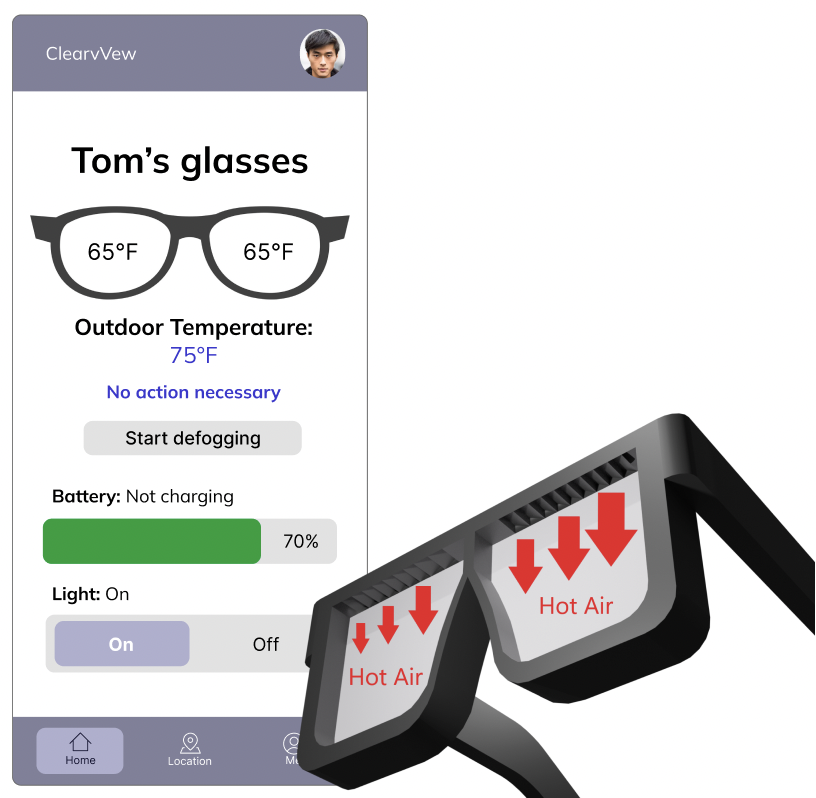
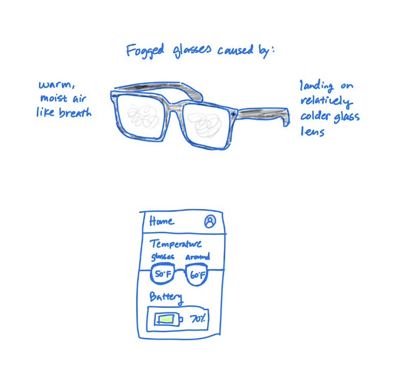
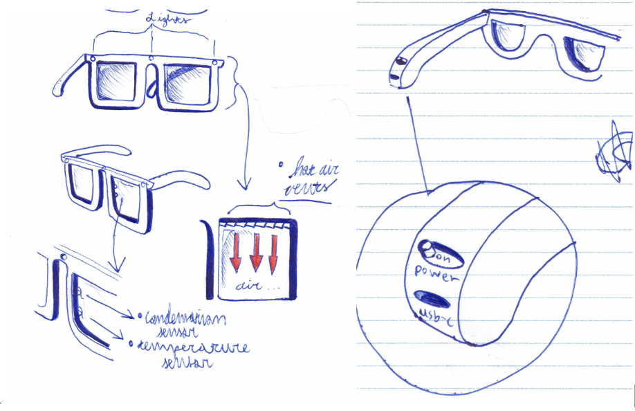
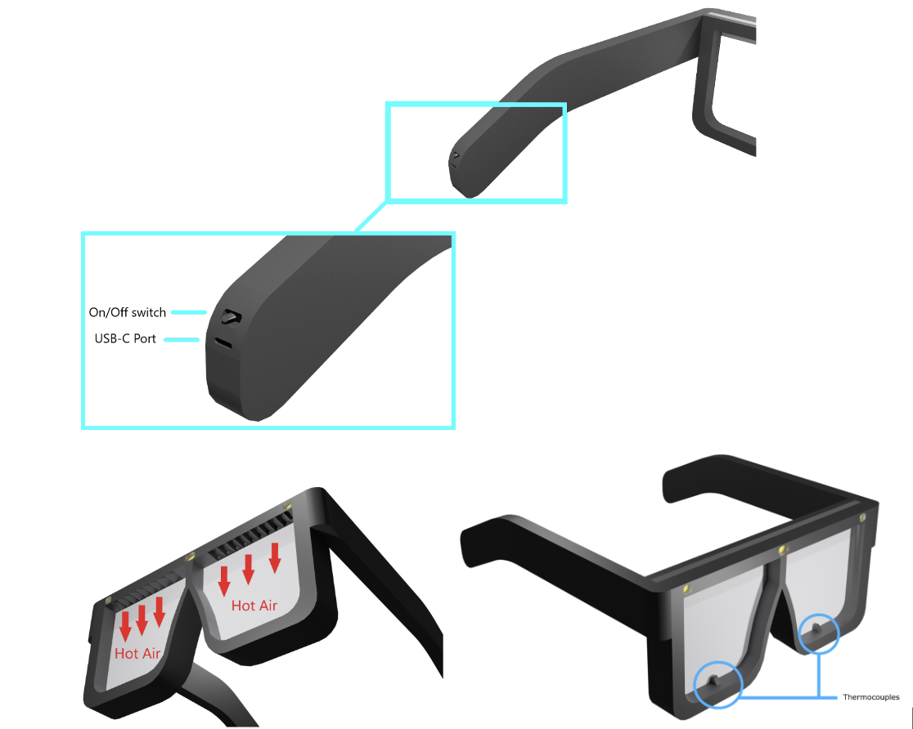
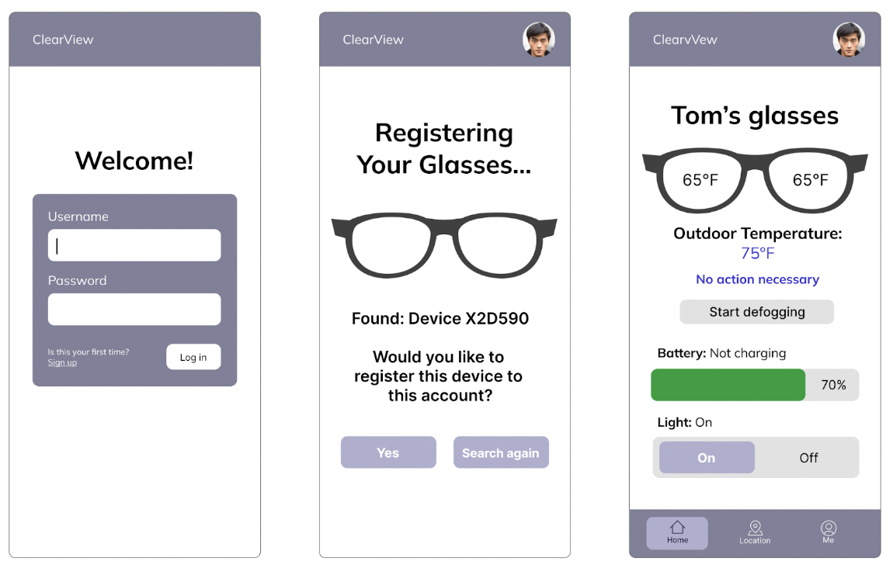
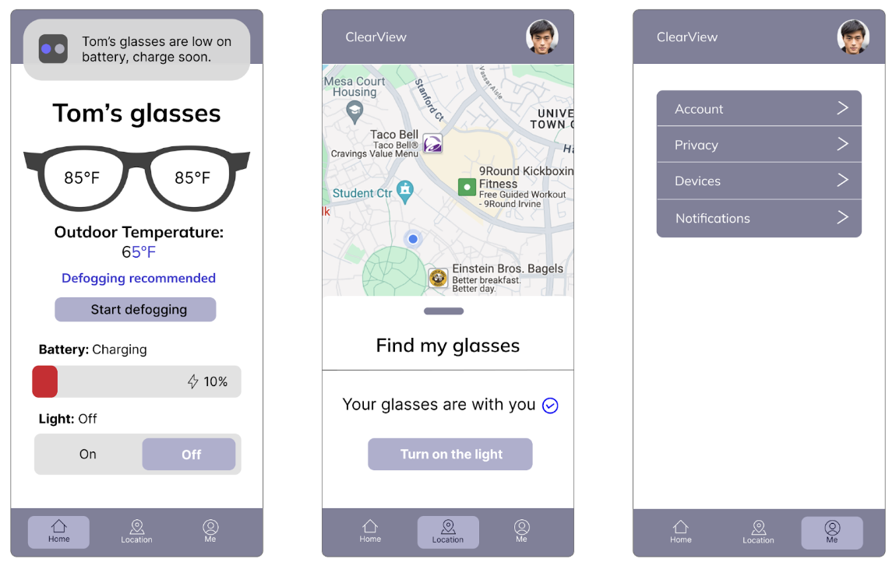

ClearView Self-defogging Glasses
My Role: Project manager
Overview
This one is for the glasses wearers. Achieve a clear view with ClearView self-defogging glasses. No more manual wiping, reapplying sprays or dish soap, or using wipes that leave a streaky view. Our glasses allow you to defog your glasses at the click of a button.
The Problem
For glasses wearers, the issue of fogging of the lens has always been an issue. However, with the emergence of COVID-19 and widespread mask-use, the issue has increased. Glasses fogging is very inconvenient for the wearer and even dangerous. With a mask, it can occur any time one’s relatively warmer breath hits the colder surface of their glasses lens and anywhere such as when one is talking or breathing heavily. This can be dangerous if one is crossing the street, running, or driving. Glasses fogging can also occur when one is not wearing a mask such as when eating hot food or drinking hot drink, moving from the cool outdoors to a warm building, or taking food out of the oven.
The Challenge
After conducting competitive analysis, my team and I found that current solutions to glasses fogging include a piece of cloth, dish soap, Anti-Fog sprays and wipes, and Anti-Fog safety glasses. The method of cloth is inconvenient as it requires the wearer to remove their glasses and manually wipe the glasses every time fog accumulates. Dish soap can create an uneven coating of the glasses, leaving some areas vulnerable to fogging. Anti-fog sprays and wipes create a coating that prevents fogging, however they have issues of transience, streakiness and unevenness, and odor. We had to create a solution that minimized or eliminated the cons and incorporated the pros of each solution.
Research
My team and I researched an existing defogging mechanism—car defrosting. We found that there are different methods for defrosting the front window and the rear window. Defrosting the front window requires blasting warm air. My team and I felt that blowing air would be uncomfortable for the glasses wearer, so we investigated further. Defrosting the rear window, on the other hand, utilizes heating rods to warm the glass. We felt that this would be more comfortable for the wearer, however, the placement of the rods to sufficiently warm the glass would also obstruct the wearer’s view. My team and I decided our smart glasses would blow warm air onto the glass to defog itself. However, we decided to have the air blow from the outside of the glass to avoid discomfort to the wearer.
Sketches and Wireframes
I created a sketch demonstrating what causes fog to form on glasses and how a companion app would look like or help with the fogging. As a team, we brainstormed how the defogging mechanism would work. The second and third sketches illustrate our ideas of regulating glasses temperature with air.
 
Final Design
We created hi-fi mock-ups of the smart glasses and the companion app.
The Smart Glasses
The components of the smart glasses include lens made from the standard CR-39 (Columbia Resin) Plastic Formula for a lightweight, and scratch-resistant lens. They will also be coated with the standard anti-scratch and anti-glare formulas. Our frames will be from carbon fiber compared to the standard Titanium or Plastic ones. Carbon Fiber provides a lighter weight, stronger build, and more corrosion resistance although it is more expensive. Bluetooth chip for location feature. Led lights for locating assistance. Charging will be through a USB-C charging port. Plastic 5 volt fans on the outside of the glasses for temperature regulation of the lens and to avoid discomfort of the eye. Lithium ion batteries to power the device. An on/off power switch. A Qualcomm Wearable 2500 platform chip for a quality chip, while not being overly complex and expensive, to run the glasses and connect to software.
The Companion App
The companion app has temperature reading, battery percentage, light switch, defogging switch, recommendation for defogging, battery notification, and location feature.
 